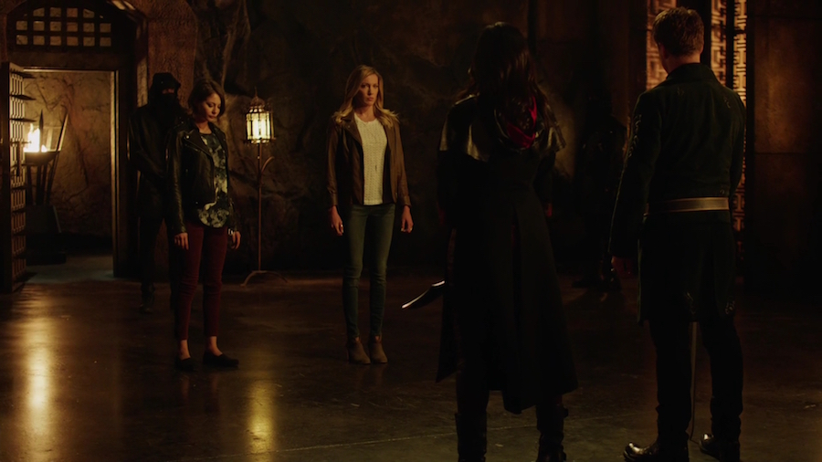

Arrow S04|E03 Restoration
One thing Arrow has going for itself over Flash so far this season is that it’s not at all reluctant to showcase its new overarching villain. While we’ve only caught a couple glimpses of Zoom on The Flash thus far, Arrow is flaunting Neal McDonough’s Damien Darhk at every opportunity. And why not? He’s pretty much the best thing to happen to the show since Brandon Routh’s Ray Palmer sauntered into the picture. This episode combined more Darhk-y goodness with a memorable villain of the week and more HIVE conspiracy for a solid overall package. And that’s not even counting the addition of Malcolm Merlyn and the League of Assassins to the mix.
McDonough offered another standout performance this week as he showed viewers once more how charismatic and terrifying Darhk can be. McDonough is going really big with his performance, but not in that campy, Batman ‘66-style way some supervillain actors strive for. There’s a real menace to Darhk. And as Team Arrow becomes more of a thorn in his side and the pressure from his faceless partners intensifies, Darhk is slowly becoming more unhinged. The scene where he used Double Down’s own playing card to execute Fayad was a perfect illustration of where his head's at right now.
By comparison, Double Down was pretty straightforward. He was really just a hired gun, but the gun in question was pretty darned nifty. His metahuman power allowed for some cool visuals and several great fight scenes with Team Arrow. His clash with Ollie wasn’t quite at the level of the Arrow/Captain Boomerang fight from last season, but it hit a lot of the same notes.
Villains aside, much of the focus this week was on healing the rift between Ollie and Diggle. The early scenes did a great job of playing up that rift and making viewers pine for the good old days of “OG Team Arrow” alongside Felicity. It’s been sad to see Ollie and Diggle lose their friendship when they were the foundation on which this whole superhero machine was built. And maybe this episode was a little too quick to have them mend fences, but it did feel good to see them fighting alongside each other as friends and partners once again. Ollie taking a “bullet” for Diggle felt like a fitting way to redeem him for his betrayal in Season 3.
Felicity had a lot of great material this week as well. As I mentioned in the previous review, it’s really nice to see her branching out from Team Arrow a little and dealing with conflicts entirely her own. She even held her own in a fight with Double Down, arguably better than Ollie did. It wasn’t graceful, but seeing Felicity blindly fire an assault rifle at her opponent was pretty darned amusing. As was Curtis’ bemused “Since when are you a badass?”

Thea at least saw some decent improvement this week. Malcolm’s explanation of her spiritual ailment helped distance Thea’s plight from Roy’s Season 2 aggression problems a bit. She’s almost cursed with vampirism in a way, as the only way to temporarily quench her bloodlust is to give into it. It really speaks to Malcolm’s twisted personality that he felt the best way to help his daughter was to lie to her and then force her into killing his minions. He honestly didn’t seem to understand why she was so upset.
Laurel didn’t fare as well. It was hard to get past her incredibly selfish and short-sighted behavior. When everyone in the room, including your sister’s former lover and the man in charge of the Hot Tub Resurrection Machine, is telling you it’s a terrible idea to bring your sister back, maybe you should stop and listen. Laurel is too often the most unlikable character on the show, and this season isn’t doing much to reverse that trend.
On the other hand, this episode did deliver a cool twist in the form of Felicity’s malfunctioning smartphone. Based on the font color of that message, it seems Ray Palmer is trying to communicate with her from his microscopic prison. Between that tease, the return of Sara (in body, if not mind) and the Captain Cold storyline in last night’s Flash, the build-up to Legends of Tomorrow is quickly intensifying.
Next weeks episode preview: